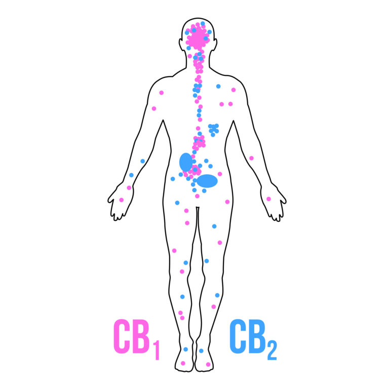

Médecine est CBD
Que sont le cannabidiol et l’huile de CBD et comment les utilise-t-on en médecine ?
Le cannabis contient plus de 500 composés, les plus notoires étant le THC (tétrahydrocannabinol) et le CBD (cannabidiol), deux cannabinoïdes. Contrairement au THC, le CBD ne produit pas de high. En revanche, il possède un excellent potentiel médical, ce qui explique sa popularité grandissante au cours des dernières années.
Le volume des recherches sur le CBD et ses vertus thérapeutiques ne cesse d’augmenter. Au moment de la rédaction de cet article, le service des National Institutes of Health (PubMed) compte plus de 2600 études sur le CBD dans son index. C’est la première fois dans l’histoire qu’autant de recherche est faite sur un cannabinoïde comme le CBD. On comprend ainsi mieux comment le CBD peut être utilisé comme agent thérapeutique pour traiter une gamme de conditions. CBD vs THC : la question de la
CBD vs THC : la question de la psychoactivité
Après le THC (delta-9-tétrahydrocannabinol), le cannabidiol (CBD) est le cannabinoïde naturel le plus étudié. On considère aussi qu’il détient un fort potentiel thérapeutique. Parmi tous les cannabinoïdes du cannabis, le CBD et le THC sont généralement présents en concentrations les plus élevées. Ces deux cannabinoïdes possèdent des propriétés distinctes, mais ils partagent aussi une relation d’interdépendance ; leur association potentialise et favorise les bienfaits thérapeutiques propres à chacun.
Le THC est responsable de l’effet psychoactif du cannabis. Le CBD est non-psychoactif ; il ne produit pas une sensation d’intoxication. En fait, le CBD est même considéré comme étant antipsychotique, diminuant et neutralisant la psychoactivité du THC lorsque les deux composés sont pris ensemble.
Ainsi, les variétés récréatives de cannabis contiennent généralement de plus fortes concentrations de THC, alors que les variétés médicales renferment soit du CBD, soit du THC, dépendamment de la condition du patient
La psychoactivité du THC représentait jusqu’à récemment un des plus grands obstacles à la libéralisation du cannabis médical. Les recherches sur le CBD ayant permis une meilleure compréhension ont aidé à atténuer ce problème en démontrant l’efficacité thérapeutique de cannabis ne contenant pas le composé psychoactif, le THC. Cette compréhension et la popularisation du CBD ont profondément affecté la manière dont la communauté médicale et le public perçoivent le cannabis.
Les médecins et les professionnels de la santé sont de plus en plus disposés à prescrire des produits de CBD pour traiter certaines maladies. La popularité du CBD au sein de la communauté médicale est attribuable à l’absence de psychoactivité, à des effets secondaires minimaux et au fait que la production de CBD se fait de manière durable. Le CBD a été légalisé presque partout en Europe (sauf dans certains pays comme la Slovaquie), aux Etats-Unis et en Australie, le gouvernement américain ayant même breveté l’utilisation du CBD.
Le CBD et le système endocannabinoïde
Il principalement deux types de récepteurs cannabinoïdes (CB1 et CB2) dans le corps humain retrouvés le plus abondamment dans le système nerveux (CB1) et système immunitaire (CB2).
Le système endocannabinoïde du corps humain est composé de ces récepteurs cannabinoïdes et des cannabinoïdes endogènes (ceux qui sont produits par le corps). Il est reconnu que la psychoactivité du THC découle de son interaction avec les récepteurs CB1. Quant à lui, le CBD n’a pas une forte affinité avec ces récepteurs et exerce ses effets de manière plus périphérique.
Le CBD affecte le système endocannabinoïde indirectement en modifiant la capacité des récepteurs cannabinoïdesmodifiant la capacité des récepteurs cannabinoïdes à se lier autant aux phytocannabinoïdes qu’aux cannabinoïdes endogènes. Il agit aussi indirectement sur certaines enzymes responsables de la dégradation des endocannabinoïdes. Par exemple, le CBD inhibe la dégradation de l’anandamide par l’enzyme FAAH, ce qui élève les taux sériques d’anandamide, un cannabinoïde endogène essentiel à la santé humaine.
Le système endocannabinoïde influence une gamme de fonctions physiologiques dans le but d’assurer son objectif premier : maintenir l’homéostasie physiologique. Il modère les fonctions cérébrales et celles des systèmes endocrinien, tégumentaire et immunitaire. La stimulation du système endocannabinoïde par des cannabinoïdes endogènes ou des phytocannabinoïdes tel le CBD affecte de nombreux aspects des fonctions physiques et mentales. Voilà pourquoi le CBD, combiné à d’autres phytocannabinoïdes, a le potentiel de traiter plusieurs conditions médicales.
Ethan Russo, docteur et chercheur spécialiste du cannabis, a émis l’hypothèse qu’un système endocannabinoïde dysfonctionnel était à la base de plusieurs maladies résistant aux traitements tels la migraine, la fibromyalgie, le syndrome du côlon irritable et d’autres syndromes. Il appuie ses recherches en montrant comment le CBD et le système endocannabinoïde jouent un rôle crucial dans le traitement de ces conditions particulières.
Avant les années 60, on ignorait l’existence du système endocannabinoïde et d’un tel phénomène physiologique. Depuis qu’on le connaît, le système endocannabinoïde a été associé aux processus de guérison et de rétablissement du corps. Cette découverte a grandement propulsé la recherche sur le cannabis et le CBD.